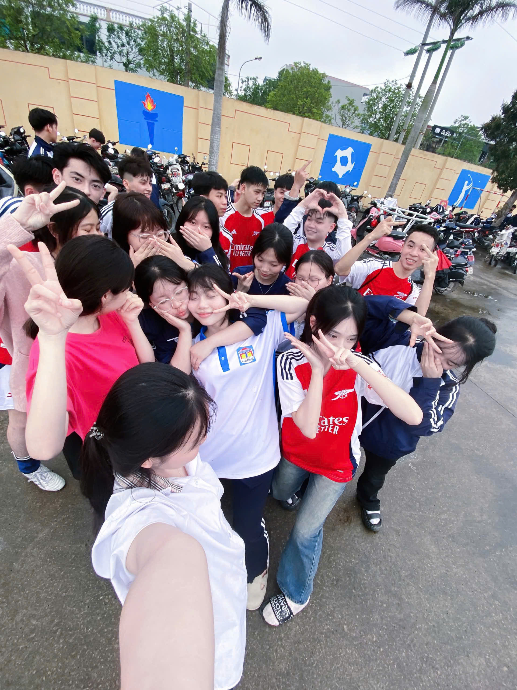
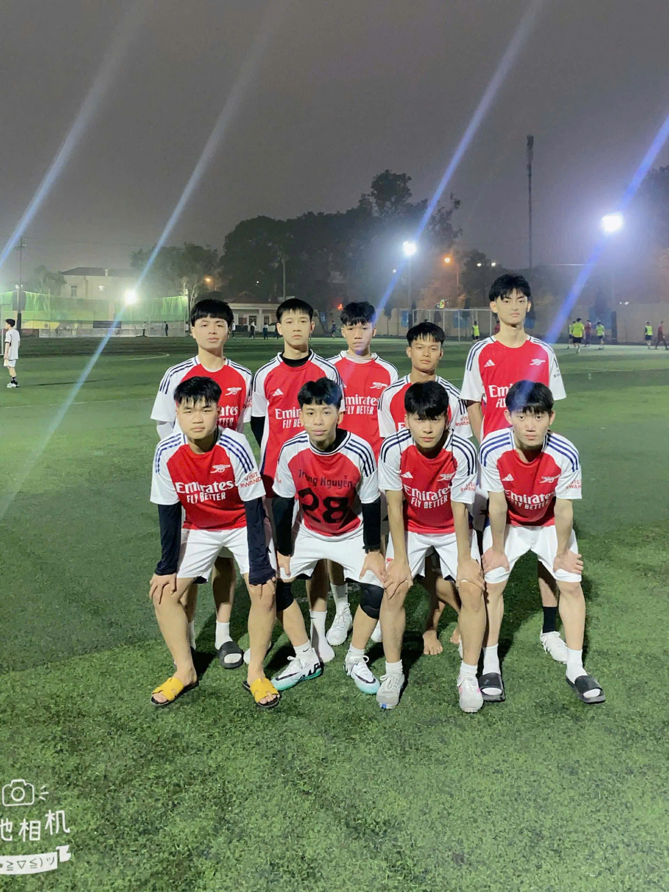

Hoạt động sôi nổi của Đoàn Thanh niên – Trường THPT Thanh Miện III


Hòa chung không khí sôi nổi của ngày hội 26/3, hoạt động đá bóng đã thu hút sự tham gia và cổ vũ nhiệt tình của đông đảo học sinh. Trên sân cỏ, các cầu thủ đã thi đấu hết mình với tinh thần fair-play, mang đến những pha bóng đẹp và những trận đấu đầy kịch tính. Đá bóng không chỉ giúp các bạn rèn luyện sức khỏe mà còn thể hiện tinh thần đoàn kết, ý chí quyết tâm và bản lĩnh của tuổi trẻ. Mỗi đường chuyền, mỗi cú sút đều là sự phối hợp ăn ý và nỗ lực không ngừng của cả tập thể. Hoạt động đá bóng đã góp phần làm cho ngày 26/3 thêm sôi động, ý nghĩa, đồng thời để lại nhiều kỷ niệm đẹp trong lòng các bạn học sinh, đặc biệt là tập thể lớp 12K.Các trận đấu diễn ra công bằng, trung thực và giàu tinh thần đoàn kết. Mỗi cầu thủ không chỉ thi đấu hết mình mà còn thể hiện ý thức kỷ luật, tinh thần tập thể và sự tôn trọng lẫn nhau.
Phong trào đá bóng góp phần rèn luyện sức khỏe, nâng cao thể chất và giúp học sinh giải tỏa căng thẳng sau giờ học. Đồng thời, hoạt động này còn thắt chặt tình đoàn kết giữa các lớp, góp phần xây dựng môi trường học đường năng động, lành mạnh.